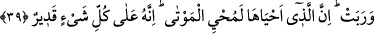

kuranın, başkasından yalnızlık ve vahşet duyduğu Allah ne yücedir. Kendisini sevenin
başka her şeyden yüz çevirdiği Allah’ın şânı ne yücedir.”
et-Te’vîlâtü’n-Necmiyye’de şöyle denmiştir: Filozofların yaptığı gibi sizler ruh
güneşinin tecellîsi anında sizlere keşfedilen mâkûlâtı/aklî ilimleri ile bir takım dakîk
ilimleri maksad ve mâbed edinmeyiniz. Yine bazı tarikat ehli mâneviyât yanlısı sâlik ve
sûfîlerin yaptığı gibi kalp ayında hakkın tecellîsi ânında şâhid olduğunuz müşâhedeleri
ve mükâşefe yoluyla elde ettiğiniz dînî ilimleri maksad ve mâbed edinmeyiniz. Bunlar
irfân ve kerâmetler geçitlerinde duraklayıp mârifetle uğraşırken, Ma’rûf’tan (c.c.),
kerâmetle uğraşırken de o kerâmeti veren zâttan meşgul oldular.
Öyle ki Allah, bütün yürüyenlerin menzillerini kendisine çevirmiştir. Evet, şâyet
sizler cehennem korkusu ve cennet ümidiyle değil de, Allah’ın zâtına, rızâsına ve
cemâline vuslatı umarak O’na ibâdet eden sâdık ve samîmî sevgililerden iseniz, mâbud
ve maksûd olarak Mevlâ hazretlerinin zâtını dost edinin.
Bütün varlıkları ile secdeye muvaffak olamayan hevâ ve bid’at ehli, Allah’a secde
etmekten büyüklük taslasa da Allah’ın yüce katında bulunan peygamber ve velîlerin
ruhları, bütün âlemde, O’nun, hiç kimsenin secde etmesine muhtaç olmadığı husûsunda
tenzih ederler. Bu tesbih ve tenzihten yorulmaz ve usanmazlar.
Kâşifî şöyle demiştir: “Bu secde Kur’ân’da zikredilen secdelerden on birinci
secdedir. Şeyh-i Ekber Fütûhât’ta bu secdeye secde-i ihtimâd secde-i ihtiyâr adını
vermiş ve şöyle demiştir: “Birinci âyetin sonunda secde edenler için Cenâb-ı Hakk’a
secde etmek şart olur. Çünkü buradaki secde “Eğer siz yalnız Allah’a kulluk
ediyorsanız (O’na şükredin)” (el-Bakara, 2/172) âyetine yakındır. İkinci âyetin
sonunda yapılan secde ise mutluluk ve muhabbet secdesi olur ki bu da “Onlar
(melekler) hiç usanmazlar” (Fussılet, 41/38) kelâmına yakındır. Yani emr-i ilâhîye
yakın secde olur.”
Ezcümle; “ibâdet ediyorsanız” sözü İmâm Şafiî ve İmâm Mâlik’e göre secde
emriyle beraber olduğundan secdeyi îzâh etmektedir. İmâm Ebû Hanîfe’ye, İmâm
Şafiî’den bir başka rivâyete ve Ahmed b. Hanbel’e göre ise Allah’a secdeyi emreden
âyetin sonu “usanmazlar” ifâdesidir. Çünkü esas mânâ burada tamamlanmaktadır.
İmamlardan her birine göre hüküm, secde hükümlerine göredir. İmâm Ebû Hanîfe’ye
göre secde vâcip, İmâm Mâlik’e göre fazîlet, İmâm Şafiî ve Ahmed b. Hanbel’e göre
ise, sünnettir.
39. Senin yeryüzünü kupkuru görmen de Allah’ın âyetlerindendir. Biz onun